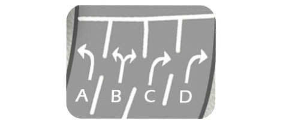
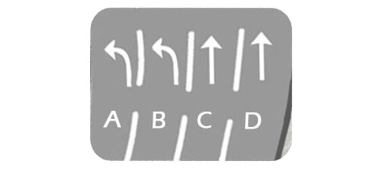
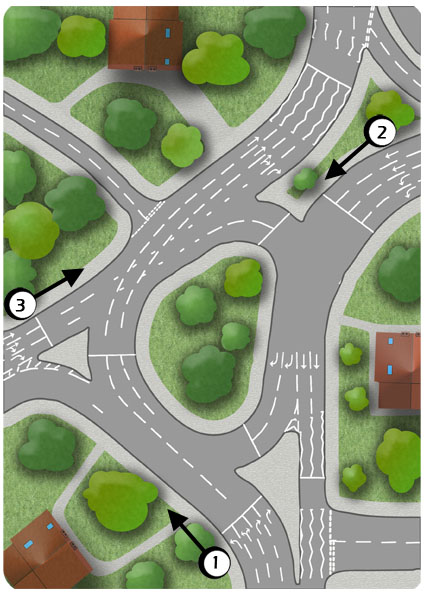

Traffic should pass on the right so, unless you are overtaking a slower moving vehicle or plan to turn right shortly ahead, keep to the leftmost lane for your intended route.
As a learner, you may be slower setting off than more experienced drivers so this factor is especially important to allow traffic flow around you.
When negotiating multi laned junctions, keep this principle in mind. For example:

To turn right at the above junction, use lane B. (Unless you are overtaking a slower moving vehicle or intend to turn right shortly ahead)

To go ahead at the above junction, use lane C. (Unless you are overtaking a slower moving vehicle or intend to turn right shortly ahead)
To turn right at the above junction, use lane B. (Unless you are overtaking a slower moving vehicle or intend to turn right shortly ahead)
See how this plays out when looking at the whole junction:
